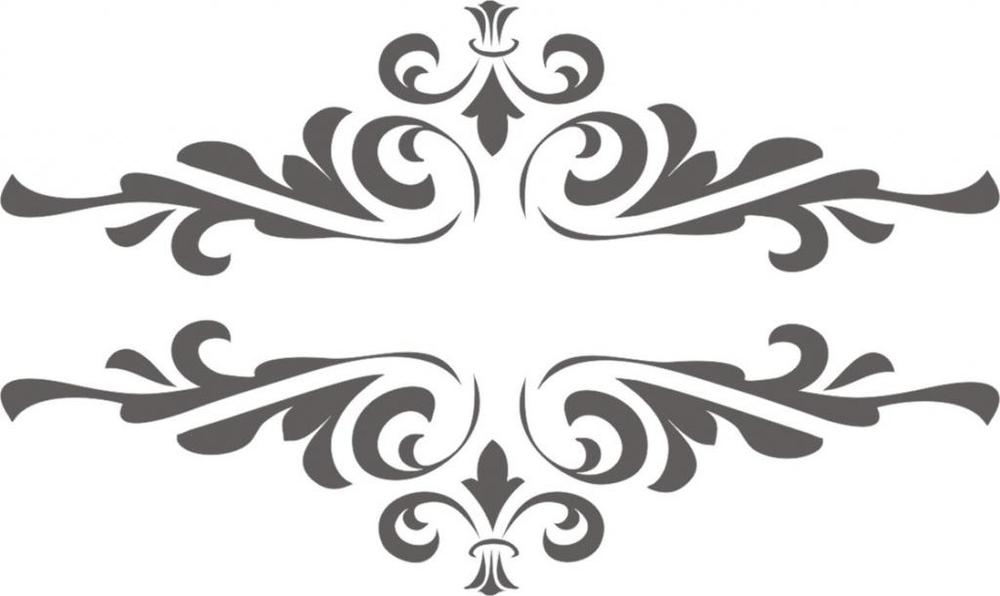

На этом сайте вы сможете получить различную информацию об автомобилях, их истогрии, видах, комплектующих, аксессуарах и т.д.
Терминологический словарь познакомит вас с автомобильными треминами, а также вы сможете заполнить анкету.
В этом разделе рассматривается все, что связано с историей создания автомобиля. По существу, раннюю историю автомобиля можно разделить на этапы, различающиеся преобладающим способом самоходного движения. Поздние этапы определялись тенденциями в размере и стилистике внешнего вида, а также предпочтениями в целевом использовании
Этот раздел содержит всек марки машин, полные модельные ряды и описания автомобилей. Каждая модель в автокаталоге имеет исчерпывающий объем информации: все поколения и модификации с точными техническими данными, фотографии, все доступные комплектации и цены на нихю
Анкета
